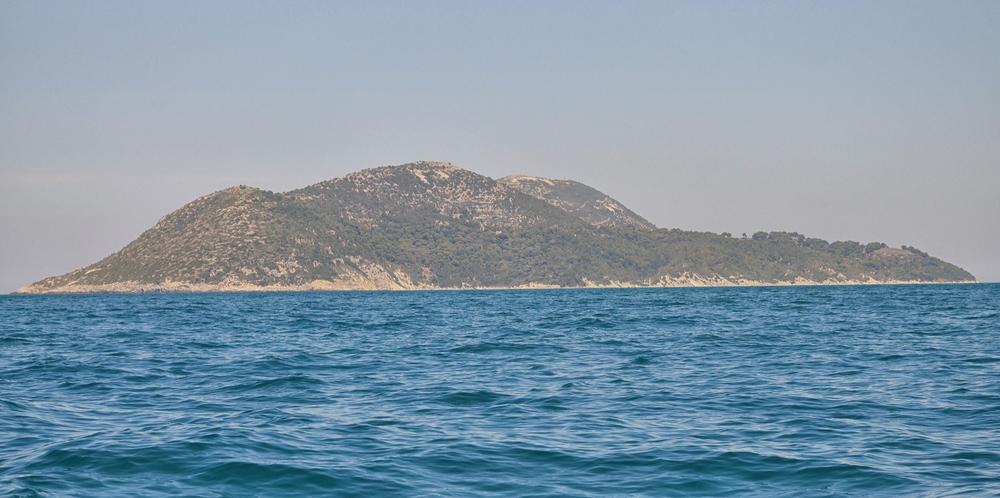
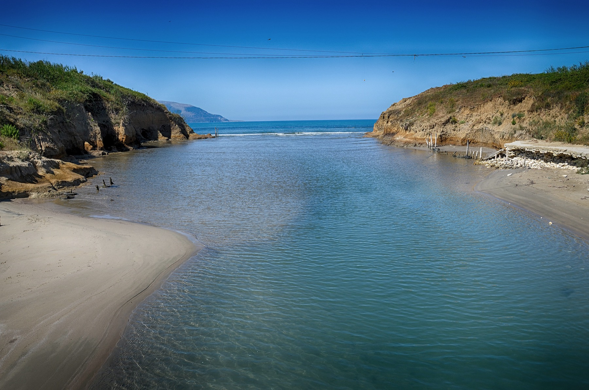

Albania:
Beyond the Investment
Land, power, profit, and the future of a nation.
Who owns Albania's future? Who benefits from its transformation? Who bears the costs? And can transparency, responsible sourcing and emerging technology create greater accountability?
A coast for sale, or a country being built?
Albania has become one of Europe's fastest-rising destinations: a record 12.47 million foreign tourists in 2025. To capture that growth, the government has used a fast-track called to bring large projects to its coast.
Two proposals near Vlorë became the centre of a national argument. On Sazan Island, a former military island, a company linked to Jared Kushner received strategic-investor status for a luxury resort. On the Zvërnec coast, inside a protected lagoon landscape, fences and bulldozers appeared in 2026 before any permit was published.
They are two different projects, in two different places, with different named investors. This investigation keeps them apart.
The protests that began on Zvërnec's beach grew into Albania's largest movement in years, about corruption, wages and who the country is being built for. Prosecutors opened an investigation. The EU warned that Albania's accession path was at stake.
The same questions run through what Albania sells: chrome dug at Bulqizë and shoes and T-shirts sewn for European brands, by workers on Europe's lowest minimum wage.
This is an investigation of competing claims, not an accusation. Every claim is tagged by the strength of its evidence, and every unanswered question is marked as one.
Albania in six numbers
Each number is sourced. Click a source tag to see where it comes from.
Four questions
- Who owns Albania's future?Investors, holding companies and beneficial owners, and what the registers actually show. · Chapter 02
- Who benefits from its transformation?Tourism, investment and exports: the promise of development and who captures it. · Chapter 01 · Chapter 04
- Who bears the costs?Protected coastlines, fenced beaches, low wages and contested land. · Chapter 03
- Can transparency and technology create accountability?What evidence, satellites, open data and supply-chain rules can and cannot do. · Chapter 05 · Chapter 06 · Chapter 07
Sazan is not Zvërnec
Different places, different legal steps, different named investors. Confusing them is the most common error in coverage of this story.


The investigation on the map
Turn layers on and off, then click a place to see what is documented there and where the evidence comes from.
Test the evidence. Question the technology.
Eight case files from this investigation
Read the actual documents behind each claim, from company registers to NGO satellite analysis, and decide: proven, supported, disputed or unknown?
Open the case filesFollow the investigation
Each chapter opens with a question. Essentials come first; the deeper research is one click away.
Six kinds of evidence
Every claim carries one of these labels. They are not interchangeable.